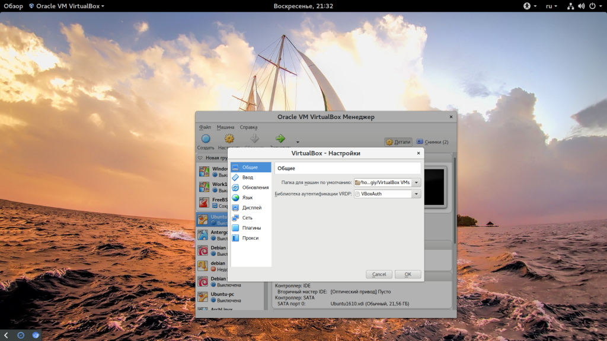

Главная >> Инструкции >> Проброс портов VirtualBox
Проброс портов VirtualBox
Обновлено: 6 июня, 2021 Опубликовано: 2 октября, 2017 от admin , 8 комменариев, время чтения: 5 минут
VirtualBox - одна из самых популярных сред виртуализации, которые используются для запуска различных операционных систем. И довольно часто случается ситуация, что вам необходимо получить доступ к какому-либо сервису гостевой системы из основной, например, веб-серверу или ssh. Но по умолчанию сетевые интерфейсы изолированы и такой возможности нет.
Для решения этой задачи можно пойти двумя путями. Мы можем пробросить необходимый порт виртуальной машины в основную систему или же выдать виртуальной машине отдельный IP адрес, что позволит обращаться к любым ее портам и использовать любые сетевые возможности. В этой небольшой статье мы рассмотрим проброс портов virtualbox двумя способами. Начнем с более простого.
По умолчанию для настройки сети для виртуальной машины используется технология NAT. С помощью нее вы можете просматривать интернет-сайты и выполнять различные действия в сети, но вы не будете видеть ваш основной компьютер. Для виртуальной машины создается виртуальная сеть, в которой есть только она одна, а ваша домашняя сеть и ваш компьютер ей не виден.
Но если вам нужно получить доступ к какому-либо сервису гостевой машины, то можно пробросить порт этого сервиса в основную систему. Так работают порты VirtualBox. Для этого откройте контекстное меню для машины и нажмите "Настройки":
Затем перейдите на вкладку "Сеть", а потом разверните строчку "Дополнительно":
Тут вам нужно нажать кнопку "Проброс портов":
Дальше нажмите кнопку с зеленым значком "+". Тут нужно заполнить несколько полей:
Адрес хоста в локальной сети можно узнать так:
ifconfig
Еще один важный момент, что порт с которого вы перенаправляете и на который перенаправляете не должны совпадать. Странное дело, но если перенаправлять с порта 80 на 80, то работать все это не будет. Нужно использовать 8080 на 80. Тогда все в порядке. Если вы не любитель много кликать, что можно воспользоваться командной терминала:
VBoxManage modifyvm "Имя машины" --natpf1 "rulename,tcp,127.0.0.1,8080,,80"
В этом примере взяты данные из рассмотренного выше примера. Теперь на хосте и виртуальной машине откроется одна и та же страница.
Проброс портов virtualbox nat работает.
Виртуальный адаптер хоста VirtualBox
Еще один способ получить доступ к виртуальной машине извне - использовать виртуальный адаптер хоста. Тут вы можете настроить все более подробно, а также получить отдельный ip для машины, что дает больше возможностей. Сначала нужно создать виртуальный адаптер. Для этого откройте меню "Файл", затем "Настройки":

Тут нужно перейти на вкладку "Сеть", затем "Виртуальные адаптеры":
Дальше нажмите кнопку "+", чтобы в списке появился пункт vboxnet0. Тут готово, нажмите несколько раз "Ok" чтобы закрыть это окно. Дальше откройте контекстное меню вашей виртуальной машины, потом "Настроить", а затем "Сеть":
Тут вам нужно в выпадающем списке заменить "NAT" на "Виртуальный адаптер хоста". В поле имя, выберите "vboxnet0":
Теперь можете запускать виртуальную машину и смотреть ее ip адрес:
По нему гостевая система будет доступной из внешней. Внешняя система теперь тоже полностью доступна из гостевой по адресу 192.168.56.1:
practicum.yandex.ru
РЕКЛАМА•16+
Курс «Мидл python-разработчик». Яндекс Практикум
Проекты в портфолио • Практика на проектах • Наставники из Яндекса
Узнать больше
×
В этой небольшой статье мы рассмотрели как выполняется проброс портов VirtualBox, это может быть очень полезным, если вы часто работаете с виртуальными машинами. Если у вас остались вопросы, спрашивайте в комментариях!
�